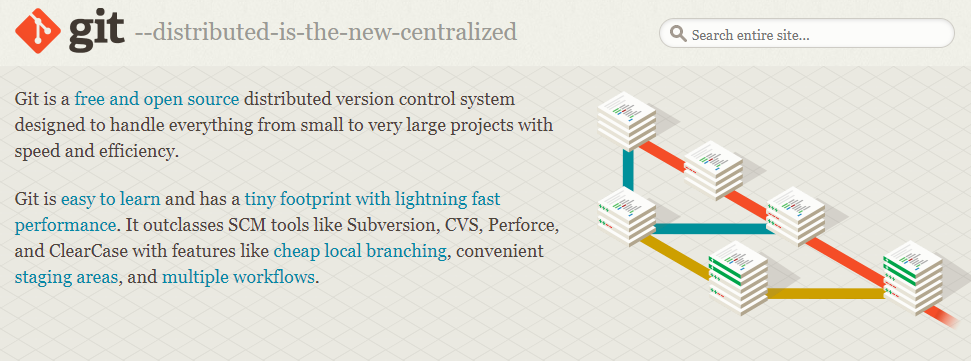
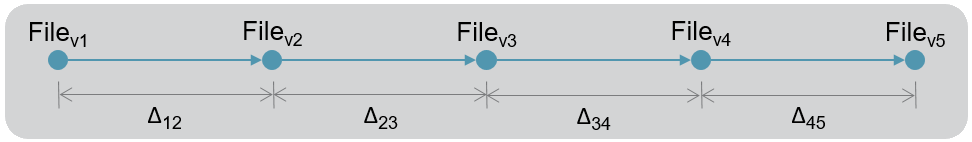
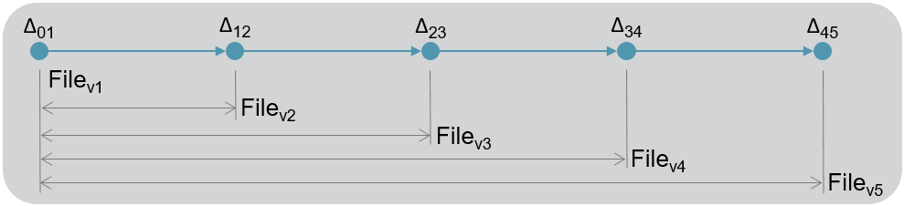
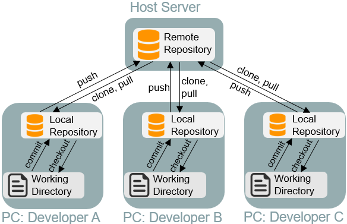
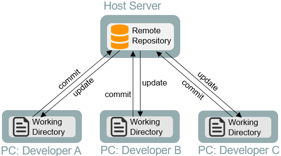
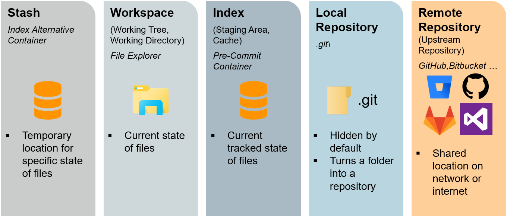
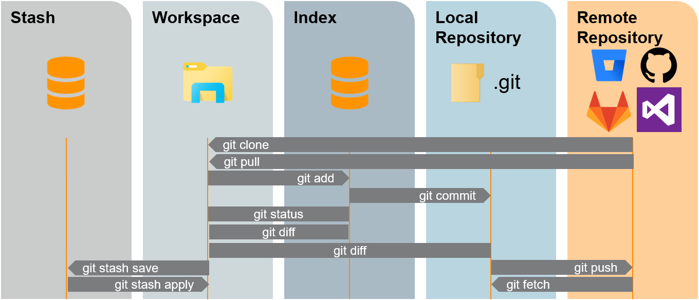

What is Git?
What is Version Control?
Version Control is a file tracking system with the following functionality.
- Co-Development
- Multiple developers modify project files simultaneously and independently
- Each developer has their own instance of the project files
- Synchronization
- All modifications amongst developers are merged and any potential conflicts are resolved
- Revision History
- Modifications to project files by any developer are logged and time-stamped
The History of Git
- Began in 2005
- Linus Torvalds & the Linux community
- Goals
- Free and open-source
- Speed
- Simple
- Non-linear development
- Fully distributed
- Windows
- You are using "Git for Windows"
- Windows Vista and newer
Terminology
- Git
- Available 3-letter word amongst Unix commands
- Global Information Tracker (not really)
- VCS
- Version Control System
- DVCS - Distributed Version Control System
- SCM
- Software Configuration Management
- Software Change Management
- Source Code Management
- Supply Chain Management
- You pick one!
- SVN
- Subversion (Apache) - A Centralized Version Control System

- CVS
- Concurrent Versions System - A Centralized Version Control System
- TFS
- Team Foundation Server (Microsoft) - A Centralized Version Control System
- Now called Azure DevOps Server with Git repositories available
The Evolution of Version Control
| Generation | Network | Content Operations | Synchronization | Example Software |
|---|---|---|---|---|
| First | None | Single file | Locks | RCS, SCCS |
| Second | Centralized | File trees | Update before commit | CVS, SVN, Visual SourceSafe, TFS |
| Third | Distributed | Changesets | Commit before merge | Git, Mercurial, BitKeeper, Bazaar |
See Eric Sink's History of Version Control.
Version Control Repository Definitions
- File System
- Files, directories, size, type, date
- Repository
- Snapshots of a file system over time
- File tree
- Store complete files from each snapshot

- Changeset
- Store files changes between each snapshot

Git Mechanisms
Distributed vs. Centralized (Git vs. SVN)
Git - DVCS
- Fully distributed, parallel programming
- Local repository for offline development
- Good large project performance

SVN - Centralized VCS
- Straightforward commands
- Rigid history
- Good large file performance

See Michael Ernst's Version Control Concepts and Best Practices
Mechanism Definitions
There are five mechanisms that complete the full functionality of Git's version control
- Three mechanisms (Workspace, Local, and Remote) are required for fundamental Git commands
- The remaining two mechanisms (Stash and Index) prove useful in many scenarios, though can be dismissed when performing basic commands

Basic Commands
Here's a look at some fundamental Git commands across the five Git mechanisms.

See Andrew Peterson's Visual Git Cheatsheet